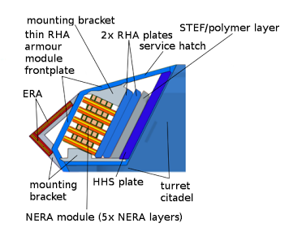

【陆军】现代坦克装甲原理简介
2017-09-11 18:10:00
原文网址：https://blog.udn.com/MengyuanWang/108908825
二战期间的坦克炮塔装甲，材质很简单，就是钢。针对大批量生產方便而设计的美苏坦克，如Sherman和T-34，采用最容易的铸造法；它的好处是可以形成复杂的形状，利用倾斜面產生侧向切力来弹飞入射的炮弹，缺点是强度较低。德国则使用平面的焊接钢板，所以可以进行各式强化处理，这种热轧强化的钢板，叫做Rolled Homogeneous Armor（RHA，硬度大约是300+BHN，Brinell Hardness Number，高于铸造钢的200+BHN），后来成为一切坦克装甲强度的测量标杆。
二战后，苏联继续使用铸造炮塔，北约阵营则较早接纳了德国的焊接式装甲炮塔。但是不论铸造或焊接，全钢结构有其极限，平均厚度增加到了200毫米以上，重量就已不胜负荷（当然炮塔正面会更厚些，例如早期型的T-72，炮塔正面的铸造钢装甲厚度为350毫米）。于是在1960年代末期，英国和德国分别开发了两种独立的新技术，都在1969年定型投產，前者一般叫做Chobham Armor，后者则是反应装甲（Reactive Armor）。
这是应用在Chieftain（酋长式）坦克炮塔的第一代Chobham Armor，可以看出它的主要特徵是一系列倾斜排列的Spaced Armor Plates（空隙装甲板），其防护力来自多层大角度倾斜面，对入射弹丸（APFSDS，穿甲弹）或高温射流（HEAT，破甲弹）多次施加侧向切力。每个装甲板并不是单纯的钢，而是由几层不同的材料形成的夹板，所以Chobham Armor被宣传是一种复合装甲，其实这些非钢材质只是次要的改进，主要的防护性能来自它的几何结构。除了热轧钢之外，最早版本的空隙装甲板还包括了玻璃纤维板来增靭减重和铝板来抑制破片（Spalling）。后来的版本才用上了陶瓷材料（Ceramics），或甚至贫铀（Depleted Uranium）。 最早的反应装甲是爆炸式（Explosive Reactive Armor，ERA），图中显示它的作用原理，也就是用两片热轧钢包着钝性炸药，当穿甲弹或破甲弹穿入装甲时，炸药爆炸，将两片钢板向外推出，对入射弹丸或高温射流施以极强的侧向切力，藉以扭曲或切断入射物。它的缺点是只能在装甲的最外层使用一次。
最早的反应装甲是爆炸式（Explosive Reactive Armor，ERA），图中显示它的作用原理，也就是用两片热轧钢包着钝性炸药，当穿甲弹或破甲弹穿入装甲时，炸药爆炸，将两片钢板向外推出，对入射弹丸或高温射流施以极强的侧向切力，藉以扭曲或切断入射物。它的缺点是只能在装甲的最外层使用一次。
冷战期间，北约诸国的军工部门有很紧密的技术合作，所以英德两国彼此交换了心得之后，德国人将两者融会贯通，开发出又一型新式的设计，就是非爆炸式反应装甲（Non- Explosive Reactive Armor，NERA）。其原理是在Chobham Armor的空隙装甲板之间，填入橡胶类的弹性材质。当入射弹击中装甲板的时候，装甲板先压缩后面的橡胶层，然后反弹回来，產生更大的侧向切力。NERA的侧向力不如ERA，但是强于空隙装甲，而且可以多层布置，适合装甲的内层。
这是巴基斯坦军方泄露的Al Khalid坦克炮塔装甲结构，代表着中国坦克工业在90年代后期的第一代复合装甲设计，应该和96A式的装甲设计基本一致。共军在80年代，通过外交通道引进了两辆Leopard II坦克，因而获得了德系NERA和ERA技术。同时也通过非正式通道引进了几辆苏制的T-72坦克，获得了苏联的玻璃纤维装甲（即图中的STEF）技术。HHS是High Hardness Steel，高硬度钢，硬度可能在600BHN左右。最新的99A式和15式坦克，则应该已经应用了陶瓷材料。 这是美国M1坦克的炮盾装甲解析图。空隙装甲板之间的小块支撑物可能有弹性设计，但是也可能只是简单的支撑架。美军的装甲改进，主要依赖新材料，如前面提过的陶瓷和贫铀，和德系的动力性设计哲学不同。
这是美国M1坦克的炮盾装甲解析图。空隙装甲板之间的小块支撑物可能有弹性设计，但是也可能只是简单的支撑架。美军的装甲改进，主要依赖新材料，如前面提过的陶瓷和贫铀，和德系的动力性设计哲学不同。
23 条留言
如果一艘航母在试验中被炸成内伤，出现各种内部裂纹什么的，会不会得不偿失。
造舰用的钢是很靭的，有损伤会先扭曲，可以简单识别。
大陆观众到《王孟源吧》去找找看吧，説不定有。
请教一下版主，我觉得战车脆弱的地方是履带和承载轮，只要一故障或被打坏，战车失去动力，成员就只好下车战斗了。请问现代履带战车是如何克服这个弱点?
坦克的履带一直是弱点。现代坦克有一大堆观瞄设备暴露在外，更是禁不起爆炸的衝击波。你如果读过《泥泞中之虎》（Otto Carius的自传），就会知道，虎式坦克虽然不怎么怕对方的直射炮火，对苏方的曲射炮兵（也就是苏联炮兵的少尉观测官向后方呼叫来的火力打击）却必须小心防备，否则履带被打坏了，轻则必须退出战綫，重则会被遗弃在战场上。像Carius这样有责任心的坦克车长必须连夜勘察防御阵綫，把每一个路上的弹坑都记录下来。一旦战斗开始，他的驾驶只管全速飙车，打了就跑。
现在的坦克还是一样的，在前綫敌人视距内停下来不走就是找死。还好现代坦克有运动中射击的能力，完全没有停车的必要。当然，这是野战，巷战又是另一回事。
不过我在金门一年半期间，好像没有真正操练过与炮兵协同作战(步战协同到是和南雄师的步兵连演练过几回)。不知道版主有没有坐过炮观车，感受一下其震撼。
特别是坦克, 那是眾矢之的, 他的对头有武装直升机, 大口径的火箭炮 (发射末敏弹), 便携式的反坦克导弹, 武装的无人机, 如果要集群攻击的话, 想想都怕. 所以除了本身的装甲防护之外, 战场战术情报链的整合对坦克来说就至关重要. 因为不了解战场情况, 就无从发现潜在的威胁. 然而坦克先天的一个弱点就是在封闭的环境下观测不良死角很多, 尤其是在崎岖的地形下. 所以我觉得像99式坦克虽然有激光压制观瞄系统, 但在短距离内最好还是能够多有几双眼睛以来观察战场情况. 譬如每辆坦克前后各有一辆有装甲防护的摩托车随行以为耳目, 因为步战车一则目标太大, 而且还是有视界窄的缺点. 他们只适合在远距离用导弹提供己方坦克火力支援. 另外就是在突破后用来扫荡敌方的步兵和火力点以保卫坦克的后方. 但是它们不能在进攻时就近保护坦克的安全(等发现状况放出步兵时已经太晚).
如果对方有空优，而且已经有攻击机/直升机在临近，那么就只好儘快接敌，近距离打混战。
打巷战，则还是由步兵当前锋比较合适，确定敌方的防御阵地后，再让坦克选择发射地点进行炮轰。
手机的技术发展，使得可见光摄影头极度小型化，未来必然会使坦克能有大数量的备份，但是像远程激光和远红外綫摄影头等等，仍然会是很脆弱的。所以坦克的战术运用，仍然讲究机动和疏散，战斗队形里两车间距是50-100公尺，并不像电影里那样，用閲兵队形衝锋。
坦克并不是刀枪不入的神器，仍然是消耗品，只不过强于任何其他地面车辆和人员罢了。
以色列只打治安战，Merkava的设计不适用于其他国家。
为野战设计的坦克，正面越小越好，从设计角度来説，最好的办法就是尽量减低高度。坦克的发动机是车身最高的地方，所以应该放在后面。Merkava的发动机前置，使它的高度过大，在野战面对敌方的APFSDS弹丸十分不利。因为以色列的对手只有过时的破甲弹，所以Merkava才能这样布置。
说到共军最新的15式轻坦，按照707和其他一些有内部消息的军迷的说法，这款坦克算是共军陆军装备体系中第一款以境外作战为目标的坦克，也难怪海军陆战队想要。并且这款坦克的某些分系统具有第四代坦克的一些性质：比如说对坦克进行过红外和雷达的隐身处理；为了解决高原作战人机效能降低的特点，大幅度提升信息化水平、自动化水平和人机工效，听说打算上AR系统；又比如，为了增强坦克面对反坦克导弹的对抗能力，增加了软杀伤主动防御系统，大大提高了机动性能，并对坦克的态势感知能力进一步提高。所以这也算是具有实验性质的坦克，个人判断未来的四代坦克会变成类似于双人操控的战斗机，而不是传统意义上的坦克了。
请教一下，不知道王先生怎么看待未来的四代坦克？
美军的观点是，先占据空优，然后由空中力量压制打击敌方的坦克集群，所以M1眼看着要服役40年了，仍然没有发展下一代坦克的必要。
当然，这是沿袭冷战期间，对抗7万辆华约坦克的策略。而共军则反过来，继承了苏联的战术思想，对坦克集群野战衝锋有较大的依赖和重视。这样的军事理论偏好，对99式和96式的设计有很大的影响。
15式的重量上限的确是为了能上战术级运输机而确定的，所以除了在山地等特殊环境保持高机动能力之外，对海外做快速反应也是未来的主要用途之一。不过这类海外任务，不会是和美军这样的对手硬碰硬，而会有或多或少的治安战成分。下一代的坦克改为双人，并且高度信息化已经是必然的，但是是否也随欧美朝治安战倾斜，倾斜的幅度有多大，还有待观察。
那还要问一下，模块化装甲能不能让96装99的装甲
还有比起99，15式岂不是更不适合巷战Σ(ŎдŎ|||)ﾉﾉ
99式为了控制重量和价钱，必须做若干取舍，最大的牺牲就是侧面装甲。这是因为以往共军的Doctrine（基础理论）是战略防御，而且是机动防御，所以99式坦克是纯为集群野战而设计的。侧面装甲就可以靠Maneuvering（机动）和队形来弥补。
M1的侧面装甲必须特别厚实，除了美军常打治安战之外，还有另一个原因，就是M1的弹药全部装在炮塔后部，如果炮塔侧面被击穿，那么弹药有殉爆的危险，成员必须马上逃命，这辆坦克只能等战斗结束后再回收了。99式的弹药全都装在底盘上，炮塔侧面被贯穿不一定会强迫坦克推出战斗。
一般的所谓坦克正面，包括左右各30°之内的扇面里的所有敌军火力，都应该受最强大的装甲保护。99式似乎在这方面也偷斤减两，有最高级保护的角度不到±30°。当然这并不是说敌军坦克在30°侧面就可以轻松击毁99式的炮塔，而是会有稍大于0的机会能避开正面装甲。不过以这种角度入射的弹丸，基本不会伤及乘员和要害。
96式的尺寸、悬吊和发动机都承受不起99式级别的装甲。
15式的装甲保护，应该是接近96B的水平，绝对不如99式。不过共军原本就重视步兵，如果在海外打巷战，大概不会像西方军队一样纯靠坦克打前阵。
另外您觉得台湾方面有能力自行设计制造下一代主战坦克吗？又或者台湾是否可能在近期更换外国新式坦克呢？个人感觉其实国军的装备放在全世界范围内200个国家中也算很好了，但主力坦克确实是拖后腿了。
臺湾连无人机都造不好，坦克就算了吧。
120毫米和125毫米的炮弹都很大，现代坦克的载弹量一般在40-45发之间。
台湾的轻／中型坦克(低于50吨)况乎如此，现代坦克动辄60吨以上，要如何迅速有效率的运送这些大铁块呢? 并且，如果这些重型履带战车一开出去，路都压坏了，后面的后勤补给车辆不就很难跟的上了吗? 不知道这方面是如何总体考虑的。
据我所知应该是1993年俄罗斯金融灾难发生后，那段时间俄罗斯想尽一切办法抵偿外债，于是给了韩国当时最好的T80U（应该只有侧面装甲和夜视逊于M1A1HA），也卖给了中共，于是才接触到玻璃纤维装甲技术.
可以看一下wiki上的T80词条：
People's Republic of China: Ordered 200 T-80Us for evaluation in late 1993. 50 delivered.[39][40][41] Tanks were not assigned to combat units. Research is used for the Type 96 tank.
33 T-80Us were ordered in 1995 from Russia and delivered between 1996 and 1997. Two T-80UKs were acquired from Russia in 2005.
同一个时期的第一代Chobham Armor据称也是同样的三层夹心板，前后是钢，中间是氧化铝。氧化铝对破甲弹很有效，但是对穿甲弹还不如玻璃纤维。
中国全国都是大工地，又有基建狂属性，（履带式）挖掘机（台称怪手？）的需求以及存量都很巨大，战时能否调用平时运输挖掘机的板车做坦克运输？
反正是辅助车辆，专业特种性不强，军民融合省钱挺好。
（顺带吐槽，港珠澳大桥香港段前脚有砼强度造假丑闻，今又有隧道爆管飙水戏码，照西式理论来讲，港台的体制原本应该有更好的监管效果......汗颜。
不过这个新湾区的发展前景，二三十年后不知能否媲美王先生如今的择居区域。）
珠江三角洲的工业產值，大概再15年就可以达到世界一流之境，居住环境的改善却要更久一些。